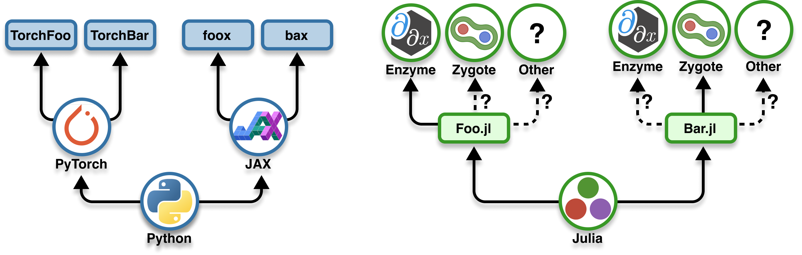

![]()
f(x) = √x # computes sqrt
function g(x) # computes approximate sqrt
y = x
for i in 1:3
y = 0.5 * (y + x/y)
end
return y
endAutomatic differentiation
A tale of two languages
2024-12-03
Introduction
Slides
https://gdalle.github.io/PyData2024-AutoDiff/

Motivation
What is differentiation?
Finding a linear approximation of a function around a point.
Why do we care?
Derivatives of complex programs are essential in optimization and machine learning.
What do we need to do?
Not much: automatic differentiation (AD) computes derivatives for us!
Bibliography
Flavors of differentiation
Derivatives: formal definition
Derivative of \(f: \mathbb{R}^n \to \mathbb{R}^m\) at point \(x\): linear map \(\partial f(x)\) such that \[f(x + \varepsilon) = f(x) + \partial f(x)[\varepsilon] + o(\varepsilon)\]
- For \(n = 1, m = 1\), derivative represented by a number \(f'(x)\)
- For \(n > 1, m = 1\), derivative represented by a gradient vector \(\nabla f(x)\)
- For \(n > 1, m > 1\), derivative represented by a Jacobian matrix
\[\partial f(x) = \left(\frac{\partial f_i}{\partial x_j} (x)\right)_{1 \leq i \leq n, 1 \leq j \leq m}\]
Manual differentiation
Write down formulas like you’re in high school.
Drawback
Labor-intensive, error-prone.
Symbolic differentiation
Ask Mathematica / Wolfram Alpha to work out formulas for you.
UndefVarError: UndefVarError(:latexify, Main.Notebook)
UndefVarError: `latexify` not defined in `Main.Notebook`
Suggestion: check for spelling errors or missing imports.
Stacktrace:
[1] top-level scope
@ ~/work/PyData2024-AutoDiff/PyData2024-AutoDiff/index.qmd:151UndefVarError: UndefVarError(:latexify, Main.Notebook)
UndefVarError: `latexify` not defined in `Main.Notebook`
Suggestion: check for spelling errors or missing imports.
Stacktrace:
[1] top-level scope
@ ~/work/PyData2024-AutoDiff/PyData2024-AutoDiff/index.qmd:163Drawback
Does not scale to more complex functions.
Numeric differentiation
Rely on finite differences with a small perturbation.
\[\partial f(x)[\varepsilon] \approx \frac{f(x + \varepsilon) - f(x)}{\varepsilon}\]
Drawback
Truncation or floating point errors depending on \(\varepsilon\).
Automatic (or algorithmic) differentiation
Reinterpret the program computing \(f\) to obtain \(\partial f(x)\) instead.
Drawback
Hard to reinterpret arbitrary code efficiently.
AD under the hood
How it works
- Hardcoded derivatives of basic functions: \(+, \times, \exp, \log, \sin, \cos\)
- Composition with the chain rule:
\[ f = g \circ h \qquad \implies \qquad \partial f(x) = \partial g(h(x)) \circ \partial h(x)\]
Main implementation paradigms:
Operator overloading
Define new types augmenting runtime operations.
Source transformation
Preprocess the source code at compile time.
Two different modes
Consider \(f : x \in \mathbb{R}^n \longmapsto y \in \mathbb{R}^m\). Time \(T(f)\) = one evaluation of \(f\).
Forward mode
At cost \(\propto T(f)\), get all \(m\) partial derivatives wrt input \(x_i\).
Propagate an input perturbation onto the outputs.
Reverse mode
At cost \(\propto T(f)\), get all \(n\) partial derivatives for output \(y_j\).
Backpropagate an output sensitivity onto the inputs.
Why is deep learning possible?
Because gradients in reverse mode are fast.
AD in Python and Julia
A flurry of options
In Python, three main AD frameworks:
In Julia, a dozen or so AD backends:
Each backend has its use cases, especially for scientific ML.
Python & Julia: users
Image: courtesy of Adrian Hill
Python & Julia: developers

Image: courtesy of Adrian Hill
Why the difference?
Because of the relation between tensor operations and AD:
- In Python, tensors are tied to an AD framework
- In Julia, tensors are part of the core language
The good
No need to write 3 versions of every scientific library.
The bad
Julia AD backends support different subsets of the language.
The importance of interfaces
Allow easy experimentation with different AD frameworks.
Python
Keras 3.0 supports Tensorflow, PyTorch and JAX.
Julia
DifferentiationInterface.jl offers a common syntax.
Conclusion
Going further
Take-home message
Computing derivatives is automatic and efficient.
Each AD system comes with limitations.
Learn to recognize and overcome them.
References
Baydin, Atilim Gunes, Barak A. Pearlmutter, Alexey Andreyevich Radul, and Jeffrey Mark Siskind. 2018. “Automatic Differentiation in Machine Learning: A Survey.” Journal of Machine Learning Research 18 (153): 1–43. http://jmlr.org/papers/v18/17-468.html.
Blondel, Mathieu, Quentin Berthet, Marco Cuturi, Roy Frostig, Stephan Hoyer, Felipe Llinares-López, Fabian Pedregosa, and Jean-Philippe Vert. 2022. “Efficient and Modular Implicit Differentiation.” In Advances in Neural Information Processing Systems. https://openreview.net/forum?id=Q-HOv_zn6G.
Blondel, Mathieu, and Vincent Roulet. 2024. “The Elements of Differentiable Programming.” arXiv. https://doi.org/10.48550/arXiv.2403.14606.
Griewank, Andreas, and Andrea Walther. 2008. Evaluating Derivatives: Principles and Techniques of Algorithmic Differentiation. 2nd ed. Philadelphia, PA: Society for Industrial and Applied Mathematics. https://epubs.siam.org/doi/book/10.1137/1.9780898717761.
Mandi, Jayanta, James Kotary, Senne Berden, Maxime Mulamba, Victor Bucarey, Tias Guns, and Ferdinando Fioretto. 2024. “Decision-Focused Learning: Foundations, State of the Art, Benchmark and Future Opportunities.” Journal of Artificial Intelligence Research 80 (August): 1623–1701. https://doi.org/10.1613/jair.1.15320.
Margossian, Charles C. 2019. “A Review of Automatic Differentiation and Its Efficient Implementation.” WIREs Data Mining and Knowledge Discovery 9 (4): e1305. https://doi.org/10.1002/widm.1305.
Mohamed, Shakir, Mihaela Rosca, Michael Figurnov, and Andriy Mnih. 2020. “Monte Carlo Gradient Estimation in Machine Learning.” Journal of Machine Learning Research 21 (132): 1–62. http://jmlr.org/papers/v21/19-346.html.
Sapienza, Facundo, Jordi Bolibar, Frank Schäfer, Brian Groenke, Avik Pal, Victor Boussange, Patrick Heimbach, et al. 2024. “Differentiable Programming for Differential Equations: A Review.” arXiv. https://doi.org/10.48550/arXiv.2406.09699.